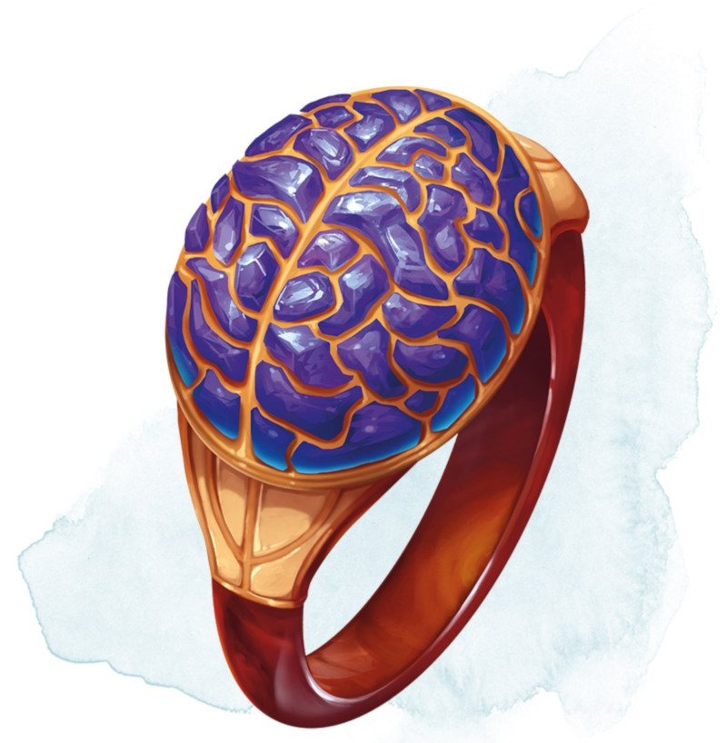

Anneau de barrière mentale
Anneau, peu commun (nécessite un lien)
Tant que vous êtes équipé de cet anneau, vous êtes immunisé aux magies qui permettent à d'autres créatures de lire dans vos pensées, de déterminer si vous êtes en train de mentir, de connaître votre alignement ou de connaître votre type de créature. Les créatures ne peuvent communiquer avec vous par télépathie que si vous le leur permettez.
Vous pouvez utiliser une action pour rendre l'anneau invisible jusqu'à ce que vous utilisiez une autre action pour le rendre visible, jusqu'à ce que vous l'enleviez, ou jusqu'à ce que vous mourriez.
Si vous mourrez alors que vous portez l'anneau, votre âme pénètre à l'intérieur de l'anneau, à moins qu'une autre âme soit déjà à l'intérieur. Vous pouvez rester dans l'anneau ou bien partir pour l'au-delà. Aussi longtemps que votre âme se trouve dans l'anneau, vous pouvez communiquer par télépathie avec la créature qui s'en est équipée. Une personne qui s'est équipée de l'anneau ne peut empêcher cette communication télépathique.
Vous pouvez utiliser une action pour rendre l'anneau invisible jusqu'à ce que vous utilisiez une autre action pour le rendre visible, jusqu'à ce que vous l'enleviez, ou jusqu'à ce que vous mourriez.
Si vous mourrez alors que vous portez l'anneau, votre âme pénètre à l'intérieur de l'anneau, à moins qu'une autre âme soit déjà à l'intérieur. Vous pouvez rester dans l'anneau ou bien partir pour l'au-delà. Aussi longtemps que votre âme se trouve dans l'anneau, vous pouvez communiquer par télépathie avec la créature qui s'en est équipée. Une personne qui s'est équipée de l'anneau ne peut empêcher cette communication télépathique.
Dungeon Master´s Guide (SRD)
